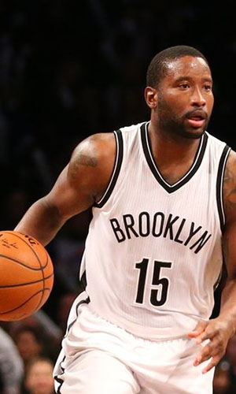

|  |
Матчи |
53 |
|
Передачи (всего/среднее) |
190 |
3.6 |
| В основе |
21 |
|
Подборы в защите (всего/среднее) |
131 |
2.5 |
| Время (всего/среднее) |
1106:45 |
20:53 |
Подборы в атаке (всего/среднее) |
12 |
0.2 |
| Очки (всего/среднее) |
393 |
7.4 |
Подборы (всего/среднее) |
143 |
2.7 |
| 2-очковые броски (всего/среднее) |
105/225 |
2/4.2 |
Перехваты (всего/среднее) |
23 |
0.4 |
| 2-очковые броски (% реализации) |
46.7% |
|
Потери (всего/среднее) |
65 |
1.2 |
| 3-очковые броски (всего/среднее) |
41/131 |
0.8/2.5 |
Блокшоты (всего/среднее) |
0 |
0 |
| 3-очковые броски (% реализации) |
31.3% |
|
Блокшоты соперника (всего/среднее) |
32 |
0.6 |
| Штрафные броски (всего/среднее) |
60/70 |
1.1/1.5 |
Фолы (всего/среднее) |
47 |
0.9 |
| Дональд Слоан |
Штрафные броски (% реализации) |
77.9% |
|
Коэффициент полезности (всего/среднее) |
378 |
7.1 |